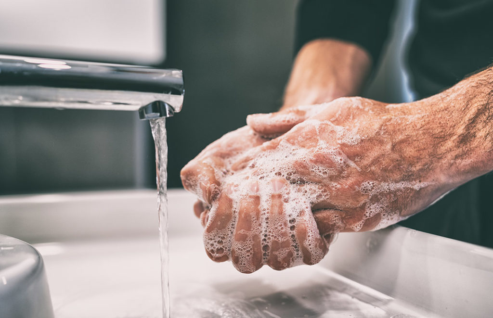

¿QUE TAN IMPORTANTE ES LA LIMPIEZA EN GENERAL?
Las personas en mayoria acostumbramos tanto a comer con manos sucias o sino alimentarse de alguna forma sin lavarnos las manos o la cara, si bien es una practica algo diciplinaria, previene todo tipo de germenes o problemas de salud que se podria presentar en un futuro no inmediato sino un par de horas o dias.


miles de factores hay sobre la limpieza de algo, en computadoras es muy importante la limpieza cada 6 meses para que la misma tenga el mejor rendimiento posible, esto se debe obvio al poco ambiente que hay respecto al cuarto o sino el poco oxigeno y limpieza que puede frencuentar. Pero que por mas cuarto limpio que tengas, la computadora necesita almenos un manteniemiento.
/pcsucia1.jpg)
/pcsucia2 (1).jpg)
/pcsucia2 (2).jpg)
/pcsucia2.jpg)
no siempre se toma en cuenta en general la limpieza, porque si bien el higiene personal es importante, la limpieza deberia tomarse no solo en ese ambito, sino en todos los aspectos que hay en la vida, como en las callesüõ£Ô∏è, playasüåä, limpieza de residuos‚ôªÔ∏è, limpieza hasta en los vehiculosüöó (tanto interior como exterior), las computadoras, casas etc. nosotros en si nos acomodamos a una vida donde el higiene es solo tomado en lo corporal pero mas alla de eso no se toma de alguna manera las contaminaciones tanto de las calles como las contaminaciones hacia mares o playas, en si la limpieza y acostumbrar este tipo de diciplinas porque casi nadie toma en cuenta que podria cada dia mas quedarnos sin oxigeno, no por algo cuando alguein tiene un cuarto completamente sucio se quede casi sin oxigeno para respirar al momento de entrar.
/pcsucia2 (2) (1) (1).jpg)
/pcsucia2 (2) (1) (3).jpg)
/pcsucia2 (2) (1).jpg)
- limpiarse las manos
- ducharse almenos 1 vez cada dos dias (mejor si al dia)
- reciclar y tirar todo tipo de residuos a basureros dedicados a no contaminar
- tomar la responsabilidad de plantar arboles y flores para la desintoxicacion
- tener en cuenta la limpieza de la casa y varios sectores de la misma
- tener un ambiente limpio
- tirar los residuos de tu casa
- diciplina